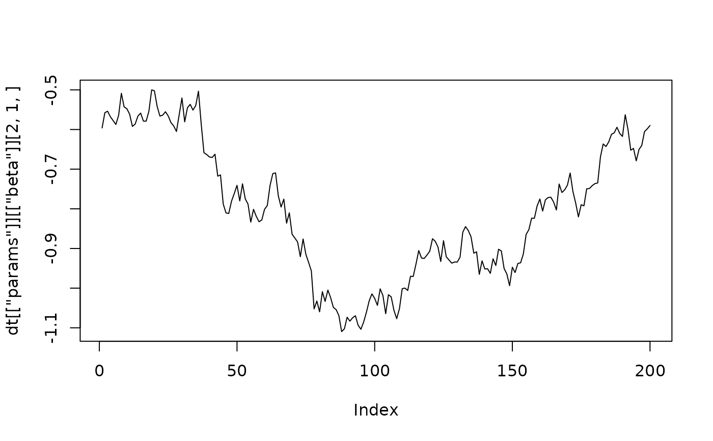

Generates an artificial data set from a vector error correction model with constant or time varying parameters and constant or stochastic volatility, for testing the algorithms of the package.
Usage
generate_artificial_vec(
nobs = 100,
k = 3,
p = 2,
r = 1,
const = NULL,
trend = NULL,
structural = FALSE,
tvp = FALSE,
sv = FALSE,
range_alpha = c(-0.5, 0.5),
range_beta = c(-1, 1),
range_gamma = c(-0.5, 0.5),
gamma_zeros = 0.5,
range_a0 = c(-0.5, 0.5),
range_const = c(-0.5, 0.5),
range_trend = c(-0.01, 0.01),
range_variance = c(1, 1),
range_psi = c(0, 0),
range_variance_state = c(1e-04, 1e-04),
range_variance_sv = c(0.01, 0.01),
stable = TRUE,
presample = 100,
level = 0
)Arguments
- nobs
number of generated observations in levels. Defaults to 100.
- k
number of endogenous variables. Defaults to 3.
- p
lag order of the series in the (levels) VAR, so that the VEC model has \(p - 1\) lags of differences. Must be at least 1. Defaults to 2.
- r
cointegration rank between 0 and
k. Defaults to 1.- const
a character specifying whether a constant term enters the error correction term (
"restricted") or the non-cointegration term as an"unrestricted"variable. IfNULL(default) no constant term is added.- trend
a character specifying whether a linear trend enters the error correction term (
"restricted") or the non-cointegration term as an"unrestricted"variable. IfNULL(default) no trend is added.- structural
logical specifying whether a structural VEC model with a lower triangular matrix \(A_0\) of contemporaneous coefficients is generated. Defaults to
FALSE. See 'Details'.- tvp
logical specifying whether the coefficients, \(A_0\) and the elements of \(\Psi\) follow random walks. Defaults to
FALSE. See 'Details'.- sv
logical specifying whether the error variances follow a stochastic volatility process. Defaults to
FALSE. See 'Details'.- range_alpha
numeric vector with two elements containing the minimum and maximum value of the loadings \(\alpha\). Defaults to
c(-0.5, 0.5).- range_beta
numeric vector with two elements containing the minimum and maximum value of the free elements of the cointegration matrix \(\beta\), which belong to endogenous variables. Defaults to
c(-1, 1).- range_gamma
numeric vector with two elements containing the minimum and maximum value of the coefficients of lagged differences. Defaults to
c(-0.5, 0.5).- gamma_zeros
numeric between 0 and 1 indicating the share of coefficients of lagged differences, which should be set to zero. Default is
0.5.- range_a0
numeric vector with two elements containing the minimum and maximum value of the free elements of \(A_0\). Only used if
structural = TRUE. Defaults toc(-0.5, 0.5).- range_const
numeric vector with two elements containing the minimum and maximum value of the coefficients of the constant term. Defaults to
c(-0.5, 0.5).- range_trend
numeric vector with two elements containing the minimum and maximum value of the coefficients of the linear trend. Defaults to
c(-0.01, 0.01).- range_variance
numeric vector with two elements containing the minimum and maximum value of the error variances. For
sv = TRUEthese are the variances in the first period. Defaults toc(1, 1).- range_psi
numeric vector with two elements containing the minimum and maximum value of the free elements of \(\Psi\). Defaults to
c(0, 0), which gives uncorrelated errors. Must bec(0, 0)for structural models.- range_variance_state
numeric vector with two elements containing the minimum and maximum value of the variances of the state equations of the coefficients, of \(A_0\) and of \(\Psi\). Only used if
tvp = TRUE. Defaults toc(0.0001, 0.0001).- range_variance_sv
numeric vector with two elements containing the minimum and maximum value of the variances of the state equations of the log-volatilities. Only used if
sv = TRUE. Defaults toc(0.01, 0.01).- stable
logical specifying whether the coefficients are restricted to a process that is integrated of order one with cointegration rank
r. Defaults toTRUE. See 'Details'.- presample
numeric specifying the number of observations, which are generated before the first returned observation and then discarded. Defaults to 100.
- level
numeric vector with one or
kelements, which are added to the generated series to shift their levels. Defaults to 0. A non-zero level requires a constant term ifr > 0. See 'Details'.
Value
A list with the elements
dataa \(T \times K\) time-series object of the artificial series in levels, named
var1,var2etc.paramsa list of the true parameters with the elements
alphathe \(K \times r\) matrix of loadings \(\alpha\).
betathe \((K + N^{R}) \times r\) cointegration matrix \(\beta\).
pithe \(K \times (K + N^{R})\) matrix \(\Pi = \alpha \beta^{\prime}\), with the columns in the order of the cointegration variables of
create_bvecmodel.gammathe \(K \times K(p - 1)\) matrix \((\Gamma_1, \dots, \Gamma_{p-1})\).
cthe \(K \times N^{UR}\) matrix \(C\) of unrestricted deterministic terms.
a0_coeffor
structural = TRUE, the \(K \times K\) matrix \(A_0\).psi_coef,u_omega,u_sigmathe parameters of the error term as in
generate_artificial_var.alpha_state_variance,beta_state_variance,gamma_state_variance,c_state_variance,a0_state_variance,psi_state_variancefor
tvp = TRUE, the variances of the state equations of the respective parameters.u_state_variancefor
sv = TRUE, the \(K\) variances of the state equations of the log-volatilities.
Parameters that are not part of the model are NULL. Time varying parameters
are \(\dots \times T\) arrays with one matrix per period.
Details
The function produces artificial observations for a vector
error correction (VEC) model:
$$A_{0t} \Delta y_t = \alpha_t \beta_t^{\prime} w_t +
\sum_{i=1}^{p-1} \Gamma_{it} \Delta y_{t - i} + C_t d_t + u_t,$$
where
\(\Delta y_t\) is a K-dimensional vector of differenced endogenous variables,
\(w_t\) is the vector of the endogenous variables in levels \(y_{t-1}\) and
the restricted deterministic terms,
\(\alpha_t\) is the \(K \times r\) matrix of loadings,
\(\beta_t\) is the cointegration matrix with \(K + N^{R}\) rows and \(r\) columns,
\(\Pi_t = \alpha_t \beta_t^{\prime}\),
\(\Gamma_{it}\) is a \(K \times K\) coefficient matrix of lagged differences,
\(d_t\) is the vector of unrestricted deterministic terms and \(C_t\) its
coefficient matrix. The error term \(u_t\) and \(A_{0t}\) are specified as
in generate_artificial_var: \(u_t \sim N(0, \Sigma_t)\) with
\(\Psi_t \Sigma_t \Psi_t^{\prime} = \Omega_t\), and \(A_{0t}\) is an identity
matrix unless structural = TRUE, where it is lower triangular with ones on
its main diagonal and the structural errors are uncorrelated.
This is the model that create_bvecmodel produces with the same
arguments p, r, const, trend and structural.
The cointegration matrix is normalised so that its first \(r\) rows are an identity
matrix. Its other rows for endogenous variables are drawn from range_beta, and
its rows for a restricted constant or trend from range_const and
range_trend. Since add_posterior_coefficients may use another
normalisation, estimates are best compared with the true parameters through
\(\Pi_t\), which does not depend on it.
The linear trend takes the value 1 in period \(p + 1\) of the returned series,
which is the first period that create_bvecmodel uses for estimation
with lag order \(p\).
If tvp = TRUE, the loadings, the free elements of \(\beta_t\), the
coefficients of lagged differences and unrestricted deterministic terms, the free
elements of \(A_{0t}\) and the free elements of \(\Psi_t\) follow random walks,
whose innovation variances are drawn from range_variance_state. Coefficients
that are zero in the first period stay zero. The random walk of the normalised
\(\beta_t\) differs from the state equation of the unnormalised cointegration
matrix in Koop et al. (2011), which create_bvecmodel uses for
estimation. If sv = TRUE, the log-volatilities follow random walks as in
generate_artificial_var. During the presample the parameters are held
at their values of the first period.
If stable = TRUE, the coefficients are drawn until the VAR representation of
the reduced form of the process has exactly \(K - r\) unit roots and all other
roots inside the unit circle, so that the series are integrated of order one and
\(\beta_t^{\prime} w_t\) is stationary. With r = 0 the series are
integrated but not cointegrated, with r = k they are stationary. For
tvp = TRUE this holds in every period: an innovation, which violates it, is
drawn again, and if no admissible innovation is found in 100 attempts, the
coefficients keep the values of the previous period.
The series start at zero before the presample. Argument level shifts them
by a vector \(m\), which gives series with high levels that follow a stochastic
trend. The dynamics of the differences are unchanged, but the error correction
term becomes \(\alpha_t \beta_t^{\prime} (y_{t-1} - m)\), so that the constant
term absorbs \(-\beta_t^{\prime} m\): the returned row of a restricted constant
in \(\beta_t\) is \(\beta^{c}_t - \beta_t^{\prime} m\) and the returned
unrestricted constant is \(c_t - \alpha_t \beta_t^{\prime} m\), where
\(\beta^{c}_t\) and \(c_t\) are drawn from range_const and
\(\beta_t\) here denotes the rows of the endogenous variables. Without a
constant this term would not be part of the model, so that a non-zero level with
r > 0 requires const = "restricted" or "unrestricted".
References
Johansen, S. (1995). Likelihood-based inference in cointegrated vector autoregressive models. Oxford: Oxford University Press.
Koop, G., León-González, R., & Strachan R. W. (2011). Bayesian inference in a time varying cointegration model. Journal of Econometrics, 165(2), 210–220. doi:10.1016/j.jeconom.2011.07.007
Lütkepohl, H. (2006). New introduction to multiple time series analysis (2nd ed.). Berlin: Springer.
See also
Other artificial data:
generate_artificial_var()
Examples
# Set seed of RNG
set.seed(1)
# Three series with one cointegration relationship
dt <- generate_artificial_vec(nobs = 200, k = 3, p = 2, r = 1)
dt[["params"]][["pi"]]
#> l.var1 l.var2 l.var3
#> var1 -0.23449134 -0.20854500 -0.07541138
#> var2 -0.12787610 -0.11372668 -0.04112439
#> var3 0.07285336 0.06479218 0.02342932
# Restricted constant and time varying cointegration with stochastic volatility
dt <- generate_artificial_vec(nobs = 200, k = 2, p = 1, r = 1, const = "restricted",
tvp = TRUE, sv = TRUE, range_variance_state = c(0.001, 0.001))
# Path of the cointegration coefficient of the second variable
plot(dt[["params"]][["beta"]][2, 1, ], type = "l")

# Cointegrated series with high levels around 100, 50 and 20
dt <- generate_artificial_vec(nobs = 200, k = 3, p = 2, r = 1, const = "restricted",
level = c(100, 50, 20))
dt[["params"]][["beta"]]
#> ect1
#> l.var1 1.0000000
#> l.var2 0.8507194
#> l.var3 -0.5602695
#> const -131.4972231
# Structural model with an unrestricted constant
dt <- generate_artificial_vec(nobs = 200, k = 3, p = 2, r = 1, const = "unrestricted",
structural = TRUE)